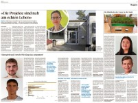

Statistik dontwastemy.energy
Vom 01.01. bis zum 01.10.2023 besuchten im Schnitt wundervolle 23'712 Besucher pro Monat unsere Projektwebsite dontwastemy.energy!Dabei wurden 1'161'186 Seiten aufgerufen! Mehr Statisik »
[06. Oktober 2023]
Die Idee zum Konzept "The Horse" entstand aufgrund des schweizweit im Jahr 2015 neu eingeführten Fachs "Technik & Umwelt" (T&U) an der Berufsmittelschule der Wirtschaftsschule KV Wetzikon (wkvw.ch). Das Konzept bildet eine Basis für angewandte Lernmethoden wie «bili» (bilingualer Unterricht), fächerübergreifende Lektionen (IDAF) und überfachliche Kompetenzen gemäss des Kantonalen (ZH) Lehrplans (mba.zh.ch).
Eine geschlossene Interaktions-Umgebung zum Arbeiten und zum Austausch. Jeder Lernende hat einen eigenen Account.
Eine öffentlich zugängliche Website mit erarbeiteten Team-Beiträgen (Projekte) der Lernenden: dontwastemy.energy
Der Verein bildet seit der Gründung im September 2018 in Zürich, Oerlikon die Heimat des "The Horse" Konzepts.
Ziel sind grenzüberschreitende Kollaborationsprojekte zu Umweltthemen zu ermöglichen und die Idee weltweit zu verbreiten,
speziefische Projekte, Lernende und Lehrende gezielt zu unterstützen, zu fördern und zu begleiten.
Vereinswebsite: THE ! association
Unter dem Titel "Nachhaltigkeitsbildung an Schweizer Berufsschulen
durch internationale digitale Zusammenarbeit"
haben wir einen Förderantrag bei Movetia - Internationales Programm eingereicht.
Das Projekt hat zum Ziel COIL*) für
Schweizer Berufsschulen voranzubringen und zu etablieren,
gemeinsam mit institutionellen Partnern aus Indien,
Indonesien und unter wissenschaftlicher Begleitung,
vorausgesetzt dem Antrag wird zugestimmt.
Statistik dontwastemy.energy
Vom 01.01. bis zum 01.10.2023 besuchten im Schnitt wundervolle
23'712 Besucher pro Monat unsere Projektwebsite dontwastemy.energy!
Dabei wurden 1'161'186 Seiten aufgerufen!
Mehr Statisik »
[06. Oktober 2023]
Artikel im Zürcher Oberländer
Ein

doppelseitiger Artikel über das "The Horse" Projekt erschien in der Ausgabe des ZOL vom 22. Juli 2023!
Förderantrag Movetia
*) Collaborative Online International Learning
Wissenschaftliche Begleitung
OST – Ostschweizer Fachhochschule, Rapperswil
Partnerinstitutionen, COIL
Organisation
[06. April 2023]
Neues Factsheet
"The Horse" Konzept auf einer Seite!
Dieses wenig technische Übersichtsblatt (PDF) erleichtert eine erste Orientierung, um was es geht und welche Elemente eine Rolle spielen.
Dazu passend gibt es auch eine PowerPoint Präsentation.
[20. März 2023]
Upgrade "The moodle Horse"
Als Option für die Zusammenarbeit steht als Werkzeug auch ein
Moodle parat;
es wurde auf die Version 4.12 aktualisiert.
Moodle im Kontext des "The Horse" Konzepts (su-pa.net).
"The Horse" Konzept am Genfer Forum bei den UN
 Präsentation/Einführung "The Horse" Konzept (Video, 6 min., 14.12.2022, youtube.com)
am Genfer Forum (osi-genevaforum.org)
bei den Vereinten Nationen
Präsentation/Einführung "The Horse" Konzept (Video, 6 min., 14.12.2022, youtube.com)
am Genfer Forum (osi-genevaforum.org)
bei den Vereinten Nationen
6th Annual International Conference (osi-genevaforum.org) on Participatory Research, Citizen Sciences, Crowd-Innovation and Fab Labs for
Peace and Development, 13. bis 15.12.2022 [19. Dezember 2022]
"The Horse" Zertifikate
Es wurde ein Zertifikat entworfen und ein paar wurden schon vergeben!
Beispiel «The Horse» Zertifikat (PDF).
Es gibt verschiedene Levels, einiges ist geplant. [19. Dezember 2022]
Statistik dontwastemy.energy
Im Jahr 2022 (bis zum 12.12.2022), besuchten im Schnitt wundervolle
11'900 Besucher pro Monat unsere Projekt-Website dontwastemy.energy!
[19. Dezember 2022]
Interaktive Projektkarte
Wir haben eine neue Karte, auf welcher die grenz- und kulturübergreifenden Projekte sichtbar sind.
Wir nutzen OpenStreetMap, welches sich wunderbar dafür eignet
(Datenschutz,
Open Database License).
"The Horse" Projektkarte
[31. Mai 2022]
Globale Kollaborationen 21/22
Wertvolle neue Projekte aus so vielen Teilen der Erde wie noch nie gibt es aktuell
auf dontwastemy.energy zu entdecken! Einige sind noch im Gange.
[31. Mai 2022]
Wikipedia Vorschaubox
Wir haben ein neues Tool/Feature für die Projekt und die Arbeitswebsites entwickelt, welches die Beschaffung von
Information unterstützt (Information ist ein Beispiel).
Wikipedia Preview Box ist einfach zu verwenden und ist Open Source.
Projektwebsite (en) »
[01. Dezember 2021]
Flyer, Mitglieder, Zahldienste
Flyer wurden gedruckt und werden verteilt, um Mitglieder zu gewinnen;
Mitglied werden! - Es gibt neue Regeln;
Neue Bezahlsysteme für Spenden & Beiträge: Kreditkarte, QR-Rechnung und TWINT [09. November 2021]
Triangles
Es gibt superschöne neue Projekte zu entdecken!
Erstmals versuchten wir Kollaboration über drei Länder, sog. "Triangles".
[09. November 2021]
Projekte zum Thema Stadtklima
Spannende neue City Climate Publikationen
der Lernenden wurden veröffentlicht auf
dontwastemy.energy! Einige sind noch in Arbeit!
[08. Februar 2021]
Neue Menustruktur
dontwastemy.energy!
Die Anzahl der Umwelt- & Technikbeiträge der Studierenden ist mittlerweile auf über 150 gewachsen!
Dies und die Zunahme der Kollaborationen haben uns bewogen die Navigationsstruktur komplett neu aufzubauen.
Den Schwerpunkt bilden nun die Themen, wie z.B.
"Climate", "Recycling", u.s.w.
[08. Februar 2021]
Neue Projekte 20/21 sind im Gange
Lernende, Lehrende und Experten von Indien, Belgien, Schweiz und – in Abklärung –
Baskenland, einzelne Teams von Pakistan, Kanada und Dubai sind am kollaborieren!
Das Hauptthema lautet "Stadtklima & Stadtbäume".
"The Horse" Konzept gewinnt an Aufmerksamkeit!
Wir freuen uns "The Horse" zu präsentieren:
ffu-pee Artikel (pdf, Seite 15 [de])
Movetia website
(movetia.ch, in 4 Sprachen)
ffu-eep (ffu-pee.ch):
Die FachFrauen Umwelt ffu-pee vertreten die Interessen der Frauen, die sich beruflich mit Umweltfragen befassen.
Movetia (movetia.ch): Movetia ist die nationale Agentur zur
Förderung von Austausch und Mobilität im Bildungssystem.
"The Horse" Zertifikate
Die Idee besteht seit einiger Zeit, nun soll's getan werden. Eine Studentin fragte nach einem, um es den Unterlagen für die Bewerbung für eine Universität beizulegen – in Arbeit.
KoBoToolbox
(kobotoolbox.org)
Wir haben die Toolbox zum ersten Mal für die
"Food & climate"
Projekte in unserer "Food App" (sway.office.com) genutzt, um Daten zu sammeln und
haben das Werkzeug ins "The Horse" Konzept integriert. Als nächstes nutzen wir es für die "Tree App".
"The Horse" darf ein "unlimitiertes" Konto für "Humanitäre Organisationen" nutzen, welches durch die UN
OCHA Services (humanitarianres ponse.info) unterstützt wird.
[November 03 2020]
Pressetext Juli 2020
Das Konzept "The Horse" –
Kollaborative & Kulturübergreifende Projekte (PDF)
[23. Juli 2020]
Projekte & Moodle
- Viele Publikationen sind abgeschlossen!
- Neu steht ein "Horse-Moodle" zur Verfügung, weitere Informationen
[08. April 2020]]
Testimonials Projekte "Food & Climate" 2019/20
Interviews
via Skype mit den Lehrenden Ann,
Mary,
Praveena von Belgien und Indien, dem Student
Lars (en),
Lars (de) und der Studentin
Dharany von der Schweiz
über die aktuellen Projekte und ihre Erfahrungen mit dem Konzept "The Horse".
Weitere Informationen zu den Projekten auf der Vereinswebsite.
[22. Dezember 2019]
didacta DIGITAL Swiss, Workshops
Basel, 28.-30.11.2019
The Horse: Digitaler Lernort zur grenzübergreifenden Bildung (archive.org) [November 15 2019]
Kollaborationen über zwei Kontinente, drei Länder, vier Schulen und mehr als 35 Teams!
Belgien, Indien und Schweiz, 85 Lernende, 8 Lehrende & Expertinnen sind mit dabei. Das Thema lautet
"food and climate" und mit Hilfe einer "Foodapp"
wird täglich aufgenommene Nahrung erfasst und kann später für Projekte genutzt werden.
[4. Oktober 2019]
Neuer Knowledge-Pool
mit über 3000 kategorisierten Beiträgen und Seiten und einer Volltextsuche
geben den Studenten und Lehrenden im geschlossenen Bereich Zugriff auf zuvor erarbeitetes Wissen und Dokumente.
[August 2019]
"THE ! association" Website
THE - The Horse Education; Unser Verein hat eine erste Version der
Website (the-horse.education) bekommen.
[August 2019]
Neue Domain
Statt save-energy.tips heisst es neu dontwastemy.energy – so passt sie besser zum Motte der Website "Don’t waste my energy!".
Im Monat März'19 besuchten mehr als 3800 Besucher:innen die Website! Einige
Infos und Website-Statisik »
[04/20/2019]
befter – "before & after the experience"
So heisst unser neues Konzept, um Wissen und Kompetenzen zu erwerben und Projekte durchzuführen.
Bereits realisierte befter-Projekte »
Mehr zum befter-Konzept »
«The Bournemouth Showcase» und neue «befters» von der Partnerklasse in Belgien
[02/26/2019]
"The Horse" Verein, Startschuss zur Vereinsgründung THE ! association, 09. September 2018,
Vereinswebsite: the-horse.education
Movetia Konferenz, Input-Referat und Podiumsdiskussion
"The Horse" Konzept an der Movetia Konferenz,
Digitalisierung für Austausch und Mobilität nutzen, 16. Mai 2018
Letzter Update 06. oktober 2023, dfe
Einfache Mittel und eine offene Architektur, angepasst an die Bedürfnisse und Kenntnisse der Lehrenden & Lernenden.
Factsheet (pdf)
Übersicht "The horse" (pdf)
Aktives Lernen und eigenverantwortliches Handeln. bili, CLIL, IDAF (save-energy.tips), Kompetenzen MBA ZH (pdf)
Kant. Lehrplan BM ZH (pdf)
Durch die konsequente Nutzung von Cloud-Diensten (Azure) sind die Kosten für die Infrastruktur und den Betrieb günstig und exakt auf die Anforderungen
abgestimmt. Übersicht Infrastruktur (pdf)
Wissen & Erfahrungen weitergeben, Medien anwenden, Projekt im Team realisieren, Beiträge propagieren (IG, Twitter, FB), bis zu 100% papierlos, Wissenspool für die Nachfolgenden und vieles mehr.
befter – before and after the experience
, eine neue Methode für kollaborative Projekte in 7 Schritten
:: Bisherige Projektthemen: Energy 2015/16 ::
where2where 2016/17 ::
The ZürIzmir Project 2017/18 ::
Scenarios Z.B. 18 ::
Befter 18/19
:: Überblick alle Projekt Topics seit 2015/16
:: Die Projekt Teams seit den Anfängen
Das Konzept "The Horse" eignet sich gleichermassen für Lehrende & Lernende. Aktuelle Medien können unter "echten Bedingungen" probiert und eingesetzt werden. Die Varianten an Möglichkeiten sind unzählig.
Kontakt ☵
Eliane Suter
044 585 19 18